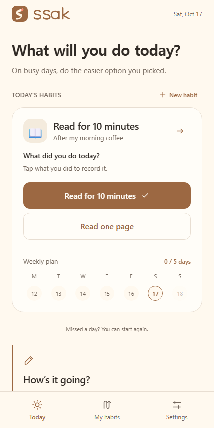

読書の習慣をひとつ作る。
朝のコーヒーのあとなど、自分に合うタイミングを決めます。習慣ひとつは期限なく無料です。
忙しい日にも、読書の小さな代案
普段の読書目標と、忙しい日の小さな代案を一緒に設定。10分でも1ページでも、実際に読んだ分をSsakに記録できます。
習慣1つは無料。広告・登録・定期購読なし。
少し本を読む
朝のコーヒーのあと
習慣プランの例です。実際のアプリ画面ではありません。
まずは無料の読書習慣をひとつ。購入やストア評価は必要ありません。
ROOM FOR REAL LIFE
朝のコーヒーのあとなど、自分に合うタイミングを決めます。習慣ひとつは期限なく無料です。
例えば、普段は10分、忙しい日は1ページ。無理なくできる量を自分で選びましょう。
今日の画面で、実際にできたほうをタップします。どちらもできなかった日は記録せず、また別の日に再開できます。
忙しくなる前に、小さな代案を用意できます。

開発者との会話から試している方は、設定でわかりにくかった点をひとつ教えてください。読書履歴の共有、購入、ストア評価は不要です。
START WITH ONE
無料で始めて、必要になったら追加できます。
一度にひとつの習慣を記録できます。
Ssak Plusは一度の購入で使えます。
記録は端末に保存され、自動では同期されません。お住まいの地域のPlus価格は、アプリ内の購入画面で確認できます。
GOOD TO KNOW
忙しい日にやることを決めておけます。その日にできた分を記録しましょう。
これまでの記録は残ります。必要になったら、また記録を始められます。
自動同期はありません。Plusではバックアップと復元が使えます。購入処理にはRevenueCatと各プラットフォームのストアを利用します。